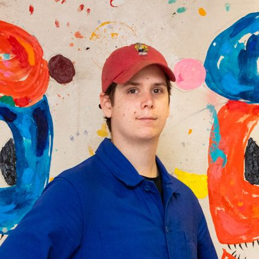
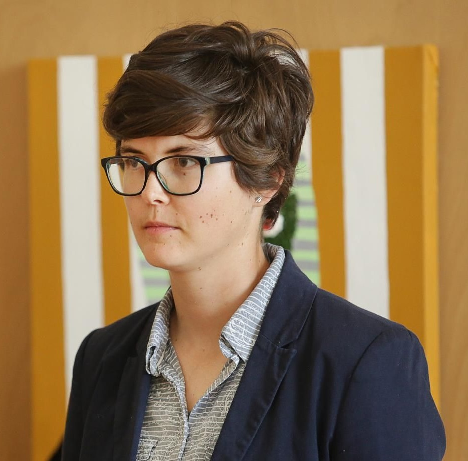
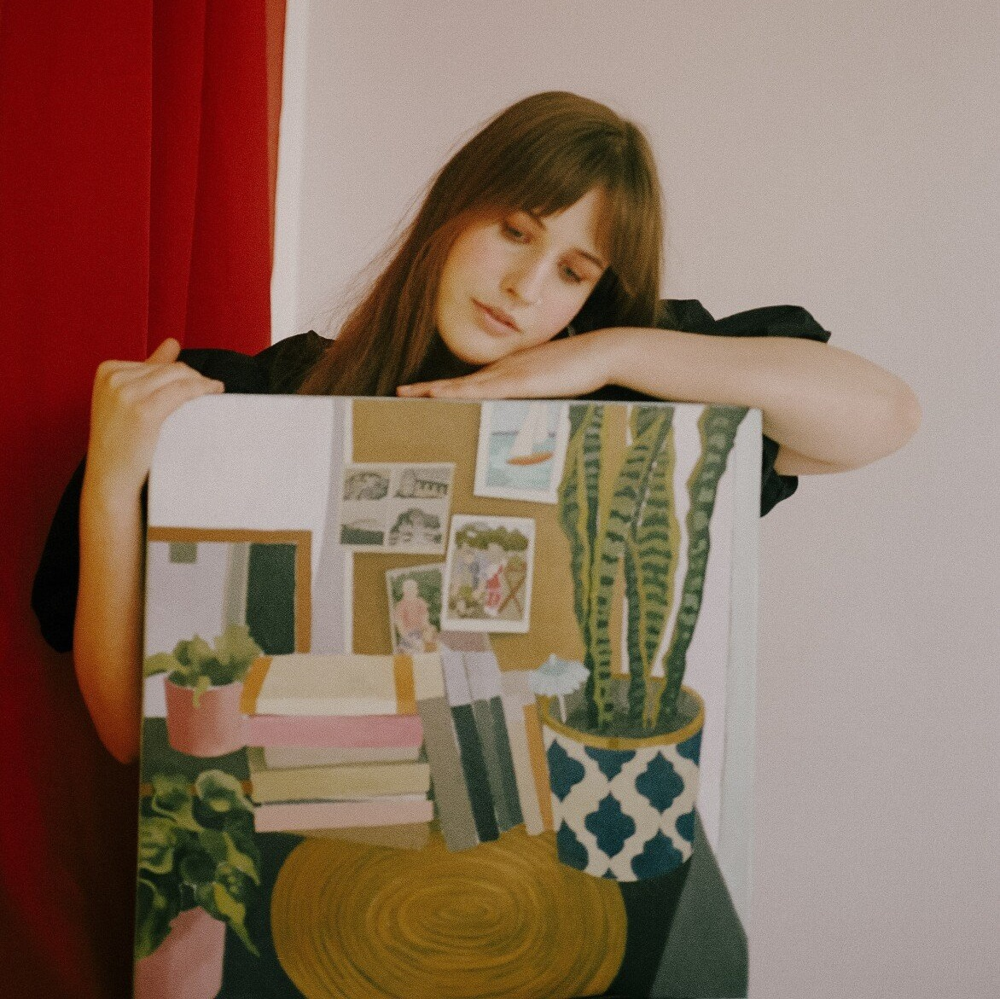

-

BOZÓ SZABOLCS
Bozó Szabolcs kortárs magyar festőművész, aki művészetében gyakran alkalmaz expresszív, erőteljes színeket és dinamikus formákat.
-

KALÁN VIKTÓRIA
Kalán Viktória kortárs magyar festőművész, akinek alkotásai a lírai hangvétel és a modern formanyelv találkozásából születnek.
-

MAROSI PANNI
Marosi Panni magyar festőművész, aki alkotásaiban harmonikusan ötvözi a modern formanyelvet és az érzelmek kifejezését.